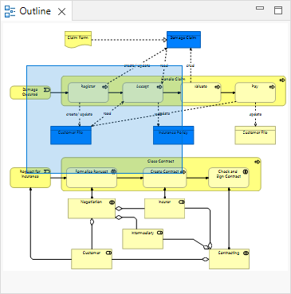

The Outline window acts as a miniature viewport onto the selected diagram View in order to aid in navigation if the diagram is too large to fit in the window.
To open or close the Outline window, choose the option from the main "Window" menu or from the main toolbar.
如果正在编辑的视图太大，无法放入应用程序的窗口，则“轮廓”窗口中将显示一个导航窗格。拖动此导航窗格会将对象滚动到绘图画布中的视图中。

轮廓窗口